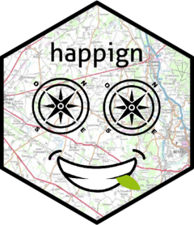

happign 
happign - IGN data from R
The goal of happign is to facilitate the use of Web Services and API from the IGN (French National Institute of Geographic and Forestry Information). happign allow downloading of :
- Shapefile via use of WFS service and APIcarto ;
- Raster via use of WMS raster service
Context
Since January 1, 2021, the French National Institute for Geographic and Forestry Information (IGN) has opened access to their data on French topography, infrastructure, and terrain freely available. The opening of IGN data under the Etalab 2.0 open license means free access and use for all.
To facilitate accessibility, IGN has implemented a set of APIs and Web services based on OGC standards. Despite a well supplied documentation, the use of APIs and Web services remains complex to set up in R. The happign package has been created to make it easier.
Rights of use for IGN data
Data from IGN geoservice website are free and available in open license according to the principle of the Etalab 2.0 license since January 1, 2021. Other data complete the IGN’s open data policy since June 1st, 2021. SCAN 25®, SCAN 100® and SCAN OACI data are free to download or stream, but any professional or individual wishing to develop a commercial paper or digital offer for the general public will have to pay a fee according to the General Conditions of Use.
Installation
You can install the released version of happign from CRAN with:
install.packages("happign")And the development version from GitHub with:
# install.packages("devtools")
devtools::install_github("paul-carteron/happign")Vignettes
Package vignettes :
- Getting started with happign : A brief intro to happign world ;
- happign for foresters : A focus on possibilities offered by happign for forestry ;
- API carto : How to use all API Carto with happign ;
Future features
IGN offers other services. Their implementation in R is under development :
- Implement isochrone and isodistance calculation
Problems and Issues
- Please report any issues or bugs you may encounter on the dedicated page on github.
System Requirements
happign requires R v >= 4.1.0.
Why it’s called happign ?
This project is - obviously - called happign; here’s why :
- “ign” stand for… IGN : the acronym of the institute ;
- “api” stand for… API : one of the interface used to retrieve the data;
- and the addition of an “h” and another “p” for the pun with “happy”. Besides the fact that I love this kind of humor, the simplified use of APIs is a real source of happiness, trust me.
Also, for the most attentive to details, you can see on the logo a green leaf stuck between the teeth of the charming smile. It is none other than the leaf from the IGN logo.
Code of Conduct
Please note that the happign project is released with a Contributor Code of Conduct. By contributing to this project, you agree to abide by its terms.